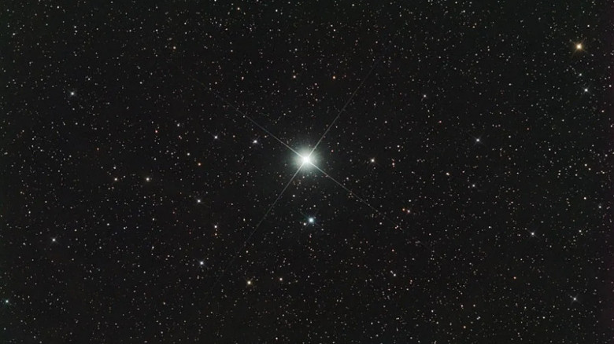

Põhjanael on üks tuntumaid tähti öötaevas. See asub peaaegu põhjapooluse kohal ja näitab põhjasuunda. Sellepärast kasutasid inimesed seda vanasti reisimisel ja merel navigeerimisel. Põhjanael tundub taevas peaaegu paigal, samal ajal kui teised tähed liiguvad selle ümber.